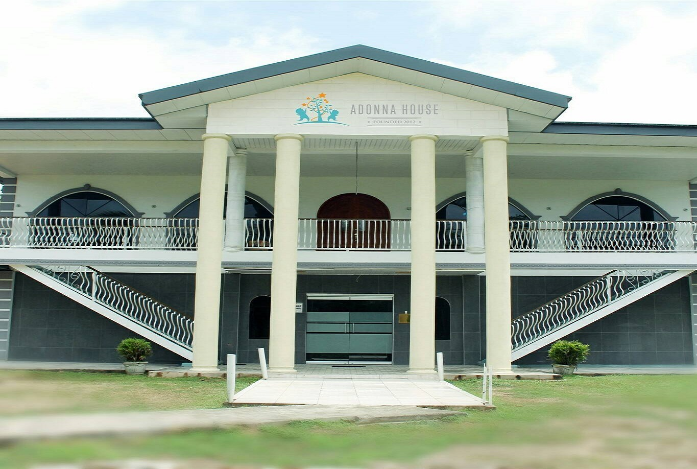

Homes
Some homes that need your support
Mercy Home for Children
USA, New York - For 150 years, Mercy Home has nurtured persons in need. Today, they support persons with developmental disabilities in living full and interesting lives. Accepts both monetary and non-monetary donations View Home
Westhaven Children's Home for the Disabled
Jamaica, Copse - A home for both physically and mentally disabled children in Jamaica. Accepts both monetary and non-monetary donations View Home
Amica House
Trinidad, Curepe - A longstanding children's home in Trinidad. Accepts both monetary and non-monetary donations View Home
Hannah's Children Homes
USA, California - Because…family is what you make it. Accepts both monetary and non-monetary donations View HomeChildren of Zion Village
Africa, Namibia - Children of Zion, Inc. is a Christian nonprofit that has built and runs a home for orphans in the country of Namibia. Accepts both monetary and non-monetary donations View HomeAmazing Grace Children's Home
South Africa, Johannesburg South - A home for both physically and mentally disabled children in Jamaica. Accepts both monetary and non-monetary donations View HomeKing's Children Homes
Belize, Cotton Tree - The King's Children Home is a private organization that is dedicated to helping and providing residential care for children in difficult circumstances. Accepts both monetary and non-monetary donations View HomeHope Centre
Trinidad, San Fernando - Hope Centre is a charitable non-profit organization for abused and abandoned children. Accepts both monetary and non-monetary donations View Home
The Adonna Institute for Orphans
Trinidad, Siparia - This Orphanage will provide a safe haven for the abused and the homeless children in Trinidad. Accepts both monetary and non-monetary donations View HomeHaven of Hope
Trinidad, Woodland - To improve the lives of children in an environment of love, safety and stability. Accepts both monetary and non-monetary donations View HomeVisitor Reflections
Take a look at some of the reflections that visitors have shared with us.